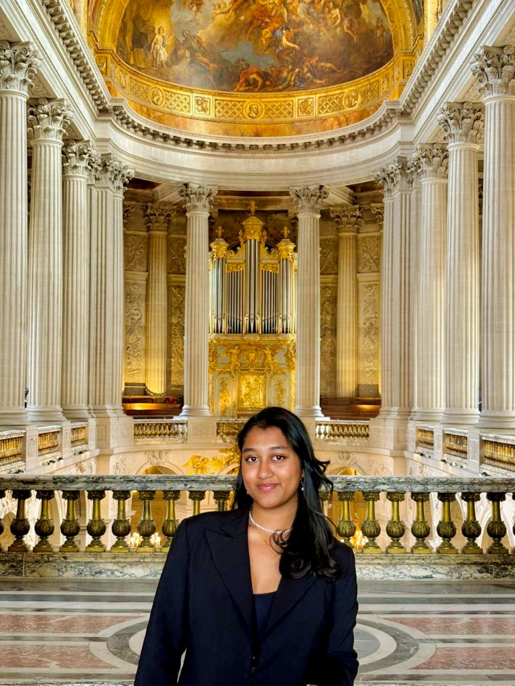
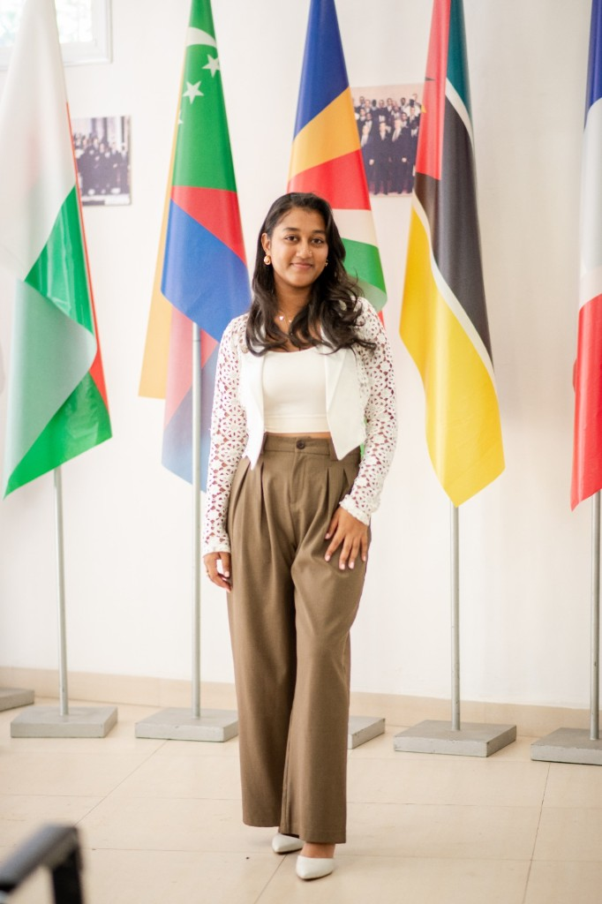

Bonjour, je m’appelle Anjara Avotraina Ayasa Roma, j’ai 20 ans et je suis de nationalité malgache et bengalie.
Bienvenue sur le portfolio d’ Ayasa Roma
Sciences Po Paris · Master 1 · École de recherche en sciences politiques · Relations internationales

Sciences Po Relations internationalesQui suis-je ?
Je suis étudiante en sciences politiques, actuellement en échange en master 1 à la prestigieuse université Sciences Po Paris, à l’École de recherche en sciences politiques, spécialisée en relations internationales.
Mon parcours
- Licence en sciences politiques
- Première année de master en science politique
Mes stages

Consulat de Monaco à Madagascar
- Appui dans la gestion des projets au sein du département social du consulat : recherche de partenaires stratégiques, planification et mise en œuvre.
Assistante de recherche — Oxford Policy Management
- Formation sur le Poverty Dynamics Study : données et preuves sur l’extrême pauvreté.
- Coordination logistique et soutien à l’organisation des sessions, pour un déroulement fluide.
- Prise de notes détaillées pour synthétiser les interventions et discussions sur la dynamique de la pauvreté.
Ambassade de la République islamique d’Iran
- Appui aux tâches administratives au secrétariat de l’ambassadeur.
- Recherches approfondies sur la relation bilatérale entre l’Iran et Madagascar.
Stage d’insertion et d’analyse — Commune rurale d’Ambohidratrimo
- Enquête sociologique et politique sur la satisfaction de la population locale vis-à-vis de la gouvernance locale.
Merci de votre visite ✦
Mes autres expériences professionnelles
Epic Fashion
2019 – 2026
Co-fondatrice et responsable opérationnelle. Gestion du cycle de vie produit, développement commercial et branding, analyse de marché et de terrain dans un environnement concurrentiel.
Mode & entrepreneuriatProfesseure particulière
Novembre 2024 – janvier 2026
Soutien scolaire niveau collège (3ᵉ) : mathématiques, physique, SVT et anglais. Séances personnalisées pour renforcer les acquis et la méthodologie.
ÉducationFIM — Foire internationale de Madagascar
Juin 2024
Hôtesse d’accueil : orientation des visiteurs, présentation des produits et services, collecte de contacts et suivi des prospects.
ÉvénementielChez Karim — Madagascar
2023 – 2024
Serveuse à temps partiel : service, prise de commandes, encaissements et entretien de la salle dans un cadre dynamique.
RestaurationEPP Anakely
2023
Enseignante bénévole : cours d’anglais pour les classes de 7ᵉ et 8ᵉ.
BénévolatSocota Group — Antsirabe
2019
Enseignante bénévole : cours de français.
BénévolatEngagements & compétences
Présidente — IEP for Humanity
Membre du bureau depuis 2024. Actions caritatives avec Akany TSIMOKA (2022), Association Soa-Kanto et CAIT Ambohimanarina (2023), centre FIHEZAHANA et Akany Avoko (2024), Graine de Bitume (2025).
Présidente — IEP English Club
Membre du bureau depuis 2024 : tutoring en anglais au sein d’un établissement public.
Vice-présidente — MUN Madagascar 2025
Participation depuis 2023.
Club d’animation — IEP Madagascar
Membre du bureau : organisation d’événements pour l’institut (dont IEP Day).
Compétences
Langues
- Malgache — langue maternelle
- Français — C1
- Anglais — C1
- Italien — A1
- Bengali — A1
Technique
- Débutante en développement web
- Data visualization (graphiques, tableaux de bord)
- Recherche académique et veille stratégique
- Production visuelle : PowerPoint, Canva